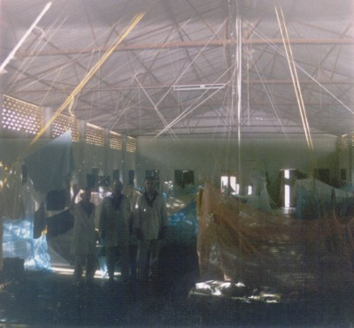
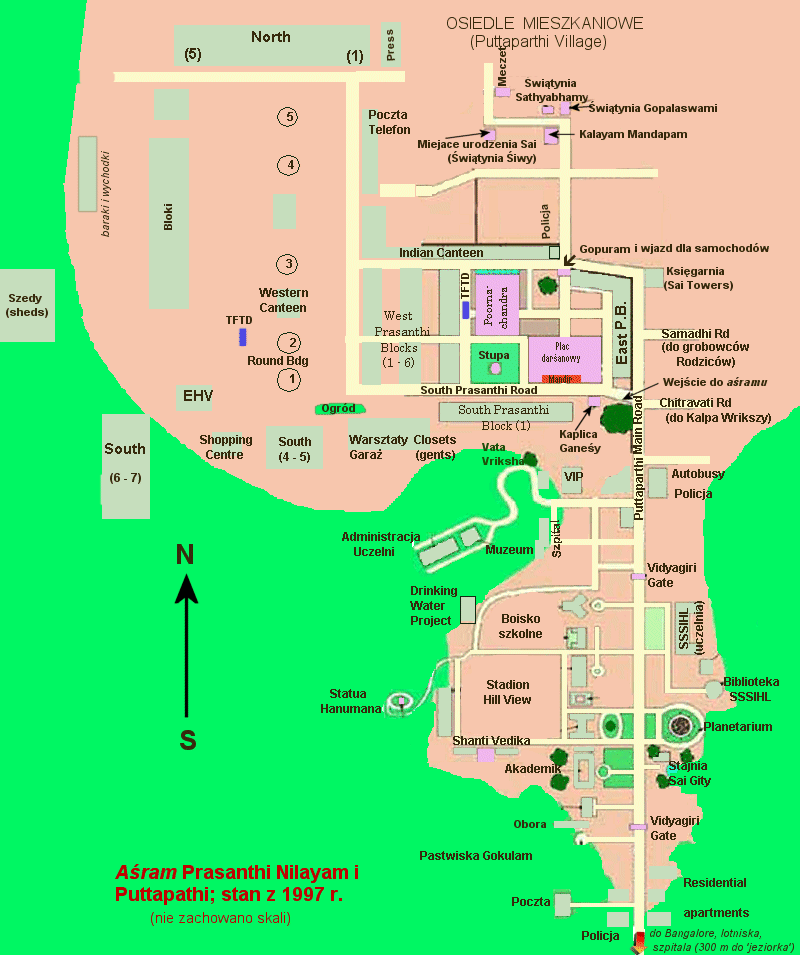
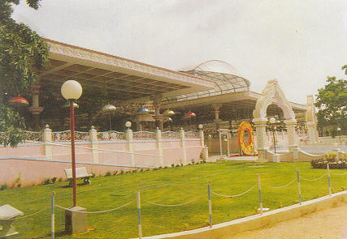
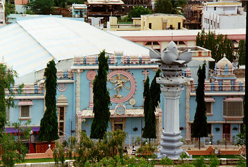
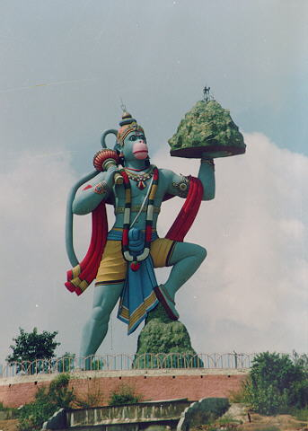
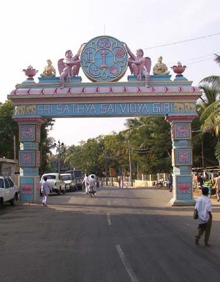
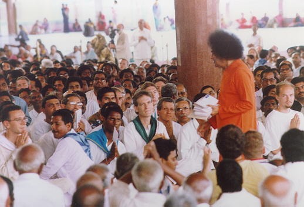

Ilustracje do dziennika pobytu u Sai Baby

Wnętrze szedu, w którym mieszkaliśmy. Na tym nieudanym zdjęciu można
dostrzec trzech ludzi (od lewej: ja, Enrico i Daniel) oraz moskitiery,
pod którymi spaliśmy na materacach rozłożonych na podłodze. Ja spałem
pod tą pierwszą z prawej lub pierwszą za nią.
aśramu Prasanthi Nilayam według stanu z 1997 r.
Rysunek jest mocno zmodyfikowaną wersją mapki zaczerpnietej ze strony puttaparthi.info.">
Plan Puttaparthi i aśramu Prasanthi Nilayam według stanu z 1997 r.
Rysunek jest mocno zmodyfikowaną wersją mapki zaczerpnietej ze strony
puttaparthi.info.

Sai Kulwant Hall (plac darśanowy) — widok z tyłu (Mandir jest
z przeciwnej strony).
Wielbiciele (mężczyźni) wchodzą z lewej strony, poza zdjęciem; Swami
często wyjeżdża i wjeżdża swoim samochodem przez widoczne wejście
pod stylizowanym łukiem (na środku).
aśoki, o których mówił ogrodnik przy szpitalu superspecjalistycznym
(nie takie jak w Aśokawanie na Lance z Ramajany). Na pierwszym
planie widać stupę Sarwadharma – symbol wszystkich
(sarwa) religii (dharma) reprezentowanych przez
pięć najważniejszych:
hinduizm, chrześcijaństwo, buddyzm, islam i zaratusztrianizm.">
Poornachandra Auditorium
od szczytu, gdzie było mieszkanie Swamiego. Przed wejściem widać cztery smukłe drzewa
— są to aśoki, o których mówił ogrodnik przy szpitalu superspecjalistycznym
(nie takie jak w Aśokawanie na Lance z Ramajany). Na pierwszym
planie widać stupę Sarwadharma – symbol wszystkich
(sarwa) religii (dharma) reprezentowanych przez
pięć najważniejszych:
hinduizm, chrześcijaństwo, buddyzm, islam i zaratusztrianizm.

Posąg Hanumana górujący nad stadionem Hill View. Przedstawiony jest tutaj z górą
Sandźiwini, którą przyniosł wraz z ziołami z Himalajów aż na Śri Lankę, aby
ratować brata Ramy, Lakszmanę (który padł nieprzytomny w czasie walki
z niegodziwymi rakszasami).
gopura) Vidya Giri w postaci łuków
nad główną drogą Puttaparthi. Na szczycie tego łuku widnieją
symbole pięciu najważniejszych religii (znak Om, krzyż, koło ze szprychami,
półksiężyc z gwiazdą i ogień) rozmieszczone wokół symbolu
stupy Sarwadharma.">
Jedna z bram (gopura) Vidya Giri w postaci łuków
nad główną drogą Puttaparthi. Na szczycie tego łuku widnieją
symbole pięciu najważniejszych religii (znak Om, krzyż, koło ze szprychami,
półksiężyc z gwiazdą i ogień) rozmieszczone wokół symbolu
stupy Sarwadharma.

Śri Sathya Sai Baba na placu darśanowym zbiera listy i rozmawia z
wielbicielami siedzącymi w lotosie po obu stronach przejścia. Wśród
siedzących po dalszej stronie przejścia można rozpoznać sewaka (porządkowego)
zwróconego tyłem do Swamiego (ten z jasnoniebieską chustą
z niebieskim wzorem obok Hindusa gotowego podać list). Za Swamim,
w głębi widać jedną z kolum podtrzymujących zadaszenie placu.
 Szpital Superspecjalistyczny Śri Sathya Sai (Super Specialty Hospital
albo oficjalnie: Sri Sathya Sai Institute of Higher Medical Sciences
in Puttaparthi) od frontu z zadbaną zielenią na pierwszym planie.
Szpital Superspecjalistyczny Śri Sathya Sai (Super Specialty Hospital
albo oficjalnie: Sri Sathya Sai Institute of Higher Medical Sciences
in Puttaparthi) od frontu z zadbaną zielenią na pierwszym planie.